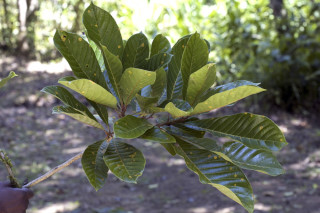
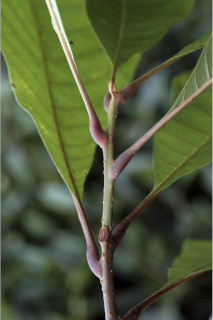
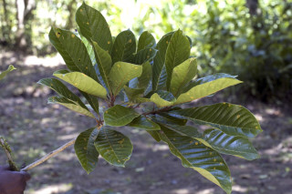
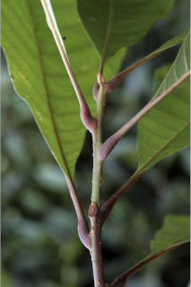
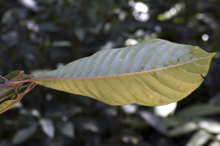
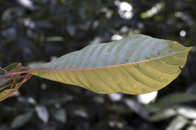
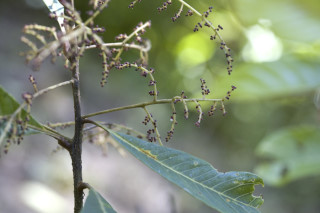
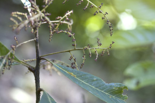

Trees up to 15 m tall.
15 ಮೀ ಎತ್ತರದವರೆಗಿನ ಮರಗಳು.
Trees up to 15 m tall.
மரங்கள் 15 மீ. உயரம் வரை வளரக்கூடியது.
Bark grey brown, lenticellate; blaze purplish red.
ತೊಗಟೆ ಕಂದು ಬಣ್ಣದಲ್ಲಿದ್ದು ನಯವಾಗಿರುತ್ತವೆ ಮತ್ತು ವಾಯುವಿನಿಮಯ ಬೆಂಡು ರಂಧ್ರಗಳ ಸಮೇತವಿರುತ್ತವೆ;ಕಚ್ಚು ಮಾಡಿದ ಜಾಗತ ಕೆಂಪು ಛಾಯೆಯಲ್ಲಿರುತ್ತದೆ.
Bark grey brown, lenticellate; blaze purplish red.
மரத்தின் பட்டை சாம்பல்-ப்ரவுன் நிறமானது , பட்டைத்துளைகள் (லெண்டிசெல்லேட்) உடையது; உள்பட்டை பர்புள்-சிவப்பு நிறமானது.
Young branchlets terete, lenticellate, glabrescent.
ಎಳೆಯ ಕಿರುಕೊಂಬೆಗಳು ದುಂಡಾದ ಆಕಾರ ಹೊಂದಿದ್ದು ವಾಯುವಿನಿಮಯ ಬೆಂಡು ರಂಧ್ರಗಳ ಸಮೇತವಿದ್ದು ದಟ್ಟವಾಗ ಮೃದು ತುಪ್ಪಳದಿಂದ ಕೂಡಿರುತ್ತವೆ.
Young branchlets terete, lenticellate, glabrescent.
சிறியநுனிக்கிளைகள் குறுக்குவெட்டுத் தோற்றத்தில் வளையமானது, பட்டைத்துளைகள் (லெண்டிசெல்லேட்) உடையது, நுண்ணிய உரோமங்களுடையது அல்லது உரோமங்களற்றது.
Leaves simple, alternate, spiral; petiole 1.5-3.5 cm long, planoconvex in cross section, glabrescent when young, swollen at base; lamina 10-30 (50) x 3-10 (-18) cm, oblanceolate to narrow obovate, apex shortly acuminate, base cuneate - attenuate, margin entire, sometimes remotely dentate in saplings, chartaceous, puberulous when young, later glabrous, drying brown; midrib nearly flat above; secondary_nerves 14-18 pairs, often with hairy domatia in their axills; tertiary_nerves coarsely reticulate or obliquely reticulo-percurrent.
ಎಲೆಗಳು ಸರಳವಾಗಿದ್ದು ಪರ್ಯಾಯ ಮತ್ತು ಸುತ್ತು ಜೋಡನಾ ವ್ಯವಸ್ಥೆಯಲ್ಲಿದ್ದು ಕೆಲವು ವೇಳೆ ಅಗ್ರದಲ್ಲಿ ದಟ್ಟವಾಗಿ ಗುಂಪಾಗಿರುವ ತರಹ ಕಾಣುತ್ತವೆ;ತೊಟ್ಟುಗಳು 1.8 – 3.5 ಸೆಂ.ಮೀ. ಉದ್ದವಿದ್ದು ಅಡ್ಡ ಸೀಳಿದಾಗ ಸಪಾಟ ಪೀನ ಮಧ್ಯದ ಆಕಾರ ಹೊಂದಿದ್ದು, ಮೃದು ತುಪ್ಪಳದಿಂದ ಕೂಡಿರುತ್ತವೆ, ಮತ್ತು ಉಬ್ಬಿದ ಬುಡದ ಸಮೇತವಿರುತ್ತವೆ;ಪತ್ರಗಳು 7 – 21 X 2-8 ಸೆಂ.ಮೀ. ಗಾತ್ರ, ಸಂಕುಚಿತ ಅಂಡವೃತ್ತ-ಚತುರಸ್ರದಿಂದ ಅಂಡವೃತ್ತ - ಭರ್ಜಿಯವರೆಗಿನ ಮಾದರಿಯ ಆಕಾರ, ಚೂಪಾದುದರಿಂದ ಕ್ರಮೇಣ ಚೂಪಾಗುವವರೆಗಿನ ರೀತಿಯ ತುದಿ ,ಚೂಪಾದುದರಿಂದ ಬೆಣೆಯಾಕಾರದವರೆಗಿನ ರೀತಿಯ ಬುಡ,ನಯವಾದ ಅಂಚು ಹೊಂದಿರುತ್ತವೆ,ಕೆಲವು ವೇಳೆ ಅಂಚು ಅಂತರವುಳ್ಳ ದಂತಿತ ಮಾದರಿಯಲ್ಲಿರುತ್ತದೆ;ಮೇಲ್ಮೈ ಕಾಗದವನ್ನೋಲುವ ರೀತಿಯಲ್ಲಿದ್ದು ಒಣಗಿದಾಗ ಪತ್ರಗಳು ಕಂದು ಬಣ್ಣ ಹೊಂದಿರುತ್ತವೆ,ಪತ್ರಗಳು ಮೇಲ್ಭಾಗದಲ್ಲಿ ಮಧ್ಯ ನಾಳ ಮತ್ತು ಇತರೆ ನಾಳಗಳು ದಟ್ಟ ಮೃದುತುಪ್ಪಳವನ್ನು ಹೊಂದಿದ್ದು ತಳ ಭಾಗದಲ್ಲಿ ಮೃದುತುಪ್ಪಳದಿಂದ ಕೂಡಿರುತ್ತವೆ;ಮಧ್ಯನಾಳ ಮೇಲ್ಭಾಗದಲ್ಲಿ ಸ್ವಲ್ಪ ಮಟ್ಟಿಗೆ ಕಾಲುವೆಗೆರೆ ಸಮೇತವಿರುತ್ತದೆ; ಎರಡನೇ ದರ್ಜೆಯ ನಾಳಗಳು 7 ರಿಂದ 18 ಜೋಡಿಗಳಿದ್ದು,ಮೇಲ್ಭಾಗದಲ್ಲಿ ಅಚ್ಚೊತ್ತಿದಂತಿರುತ್ತವೆ, ಹೆಚ್ಚಿನ ಸಂಧರ್ಭಗಳಲ್ಲಿ ತಳಭಾಗದ ಅಕ್ಷಾಕಂಕುಳಿನಲ್ಲಿ ರೋಮಸಹಿತವಾದ ಸಹಜೀವಿ ಗೂಡಿನ ಸಮೇತವಿರುತ್ತವೆ; ಮೂರನೇ ದರ್ಜೆಯ ನಾಳಗಳು ಒರಟಾದ ಜಾಲಬಂಧ ನಾಳ ವಿನ್ಯಾಸದಲ್ಲಿರುತ್ತವೆ ಅಥವಾ ಜಾಲಬಂಧ ನಾಳ ವಿನ್ಯಾಸದಲ್ಲಿದ್ದು ಓರೆಯಾಗಿ ಎಲೆದಿಂಡಿಗೆ ಕೂಡುತ್ತವೆ.
Leaves simple, alternate, spiral; petiole 1.5-3.5 cm long, planoconvex in cross section, glabrescent when young, swollen at base; lamina 10-30 (50) x 3-10 (-18) cm, oblanceolate to narrow obovate, apex shortly acuminate, base cuneate - attenuate, margin entire, sometimes remotely dentate in saplings, chartaceous, puberulous when young, later glabrous, drying brown; midrib nearly flat above; secondary_nerves 14-18 pairs, often with hairy domatia in their axills; tertiary_nerves coarsely reticulate or obliquely reticulo-percurrent.
இலைகள் தனித்தவை, மாற்றுஅடுக்கமானவை, சுழல் போன்று அமைந்தவை; இலைக்காம்பு 1.5-3.5 செ.மீ. நீளமானது, குறுக்குவெட்டுத் தோற்றத்தில் பிளேனோகான்வக்ஸ், இளம்பருவத்தில் நுண்ணிய உரோமங்களுடையது அல்லது உரோமங்களற்றது, காம்பின் தளப்பகுதி உப்பியது; இலை அலகு 10-30 (50) X 3-10 (-18) செ.மீ., தலைகீழ் ஈட்டி வடிவானது முதல் குறுகிய தலைகீழ் முட்டை வடிவானது, அலகின் நுனி குட்டையான அதிக்கூரியது, அலகின் தளம் ஆப்பு வடிவானது-அட்டனுவேட், அலகின் விளிம்பு முழுமையானது, இளம்பருவத்தில் சிலசமயங்களில் ஆங்காங்கே பற்களுடையது, சார்ட்டோசியஸ், இளம்பருவத்தில் உரோமங்களுடையது, முதிரும் போது உரோமங்களற்றது, உலரும் போது ப்ரவுன் நிறமானது; மையநரம்பு கிட்டதட்ட அலகின் பரப்பிற்கு சமமானது; இரண்டாம் நிலை நரம்புகள் 14-18 ஜோடிகள், உரோமங்களுடைய டொமேசியா நரம்புகளின் கோணங்களில் உடையது; மூன்றாம் நிலை நரம்புகள் அகன்ற வலைப்பின்னல் போன்றவை அல்லது தளம் நோக்கிய வலைப்பின்னல்-பெர்க்கரண்ட் போன்றவை.
Inflorescence terminal and axillary panicles, pubescent; flowers sessile; bracts absent.
ಪುಷ್ಪಮಂಜರಿಗಳು ತುದಿಯಲ್ಲಿನ ಪುನರಾವೃತ್ತಿಯಾಗಿ ಕವಲೊಡೆಯುವ ಮಾದರಿಯವುಗಳಾಗಿದ್ದು,ದಟ್ಟ ಮೃದು ತುಪ್ಪಳದಿಂದ ಕೂಡಿರುತ್ತವೆ;ಹೂಗಳು ತೊಟ್ಟುರಹಿತವಾಗಿರುತ್ತವೆ;ಪತ್ರಕಗಳು ಇರುತ್ತವೆ
Inflorescence terminal and axillary panicles, pubescent; flowers sessile; bracts absent.
மஞ்சரி தண்டின் நுனியில் மற்றும் இலைக்கோணங்களில் காணப்படுபவை பேனிக்கிள் வகை மஞ்சரி, உரோமங்களுடையது; மலர்கள் காம்பற்றது; பூவடிச்செதில் அற்றது.
Drupe, globose, to 0.5 cm across; seed one, rugose.
ಡ್ರೂಪ್ಗಳು ಗೋಳಾಕಾರದಲ್ಲಿರುತ್ತವೆ;ಬೀಜಗಳ ಸಂಖ್ಯೆ 1 ಇದ್ದು ಸುಕ್ಕುಸುಕ್ಕಾದ ಮೇಲ್ಮೈ ಹೊಂದಿರುತ್ತವೆ.
Drupe, globose, to 0.5 cm across; seed one, rugose.
உள்ளோட்டுத்தசைகனி (ட்ரூப்), கோள வடிவமானது, 0.5 செ.மீ. குறுக்களவுடையது; ஒர் விதையுடையது, சுருக்கங்களுடையவை (ருக்கோஸ்).

 



 



 
